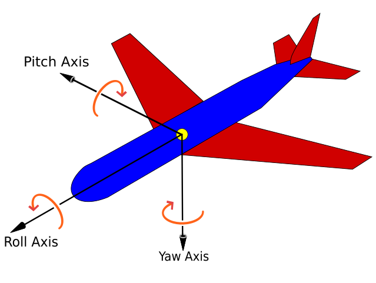
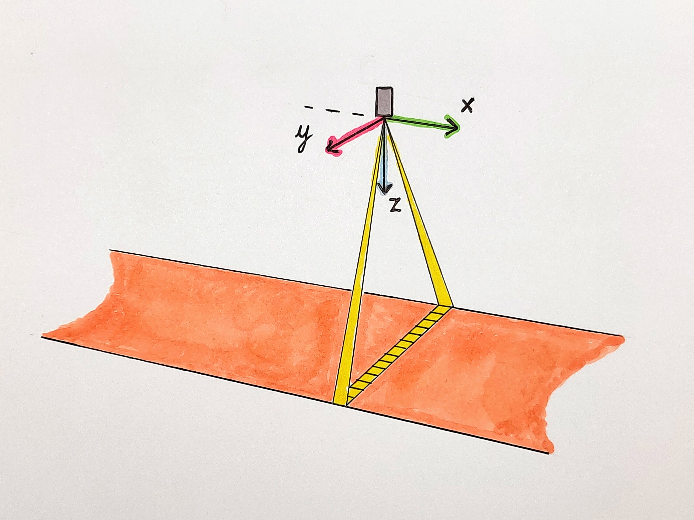
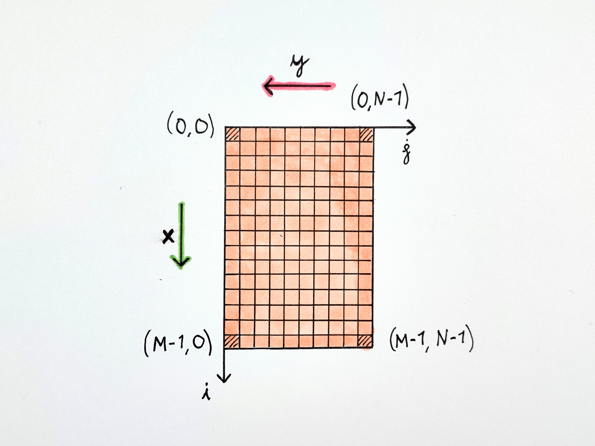
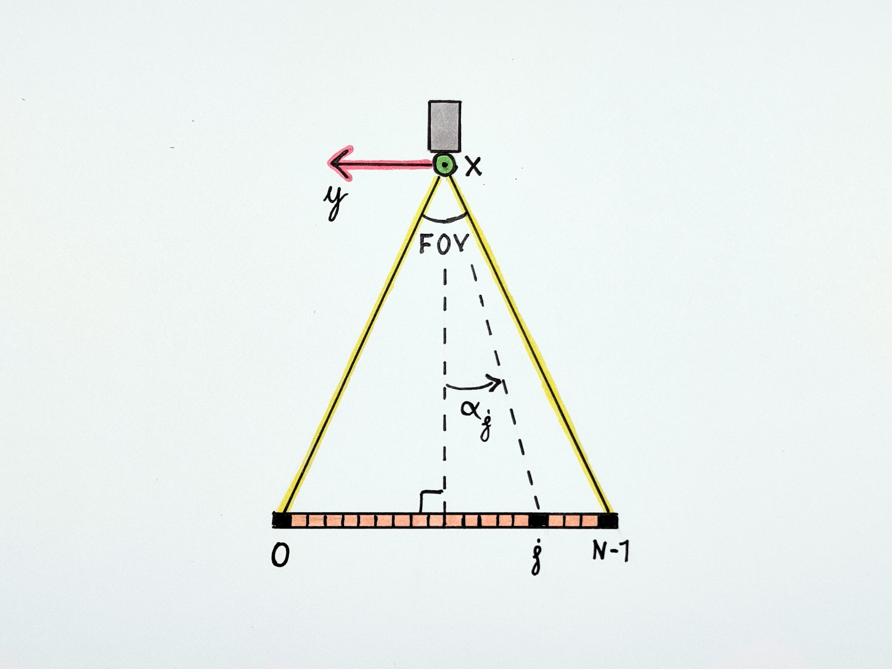
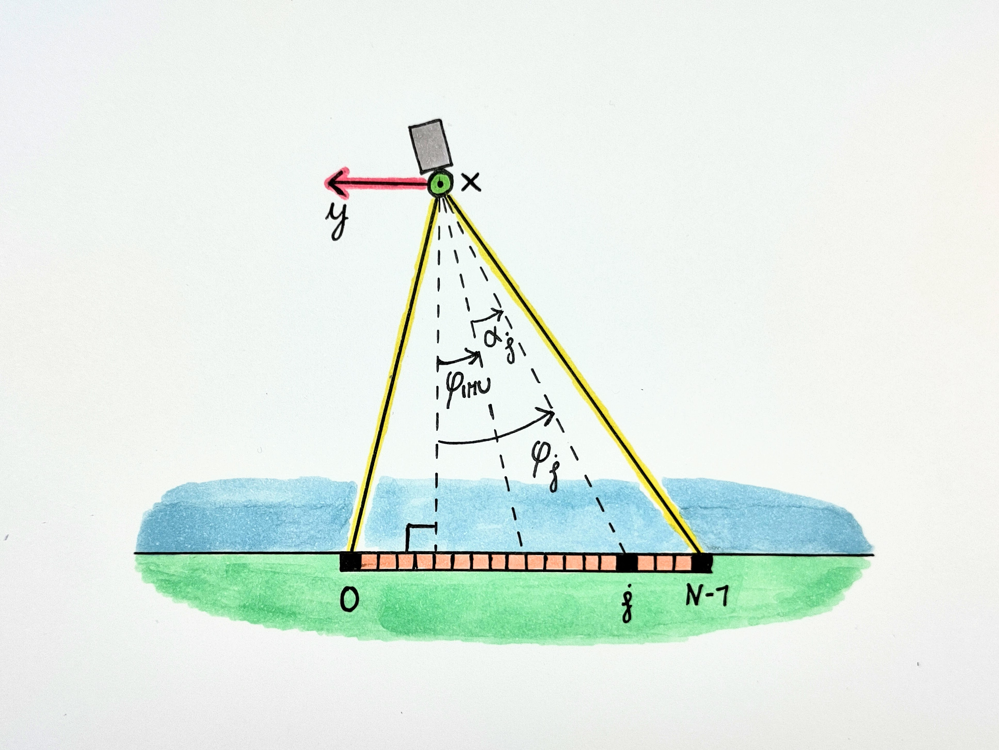
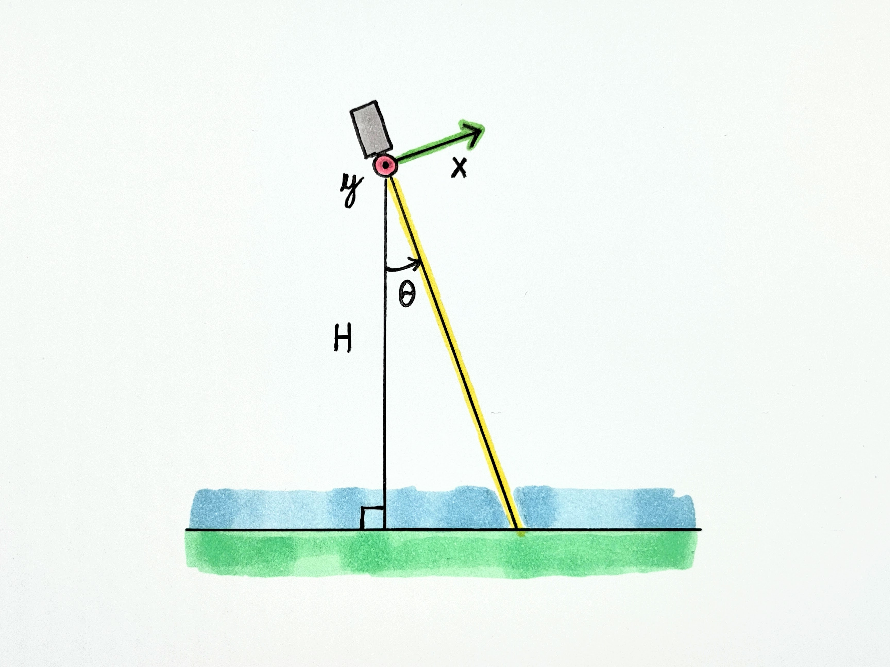
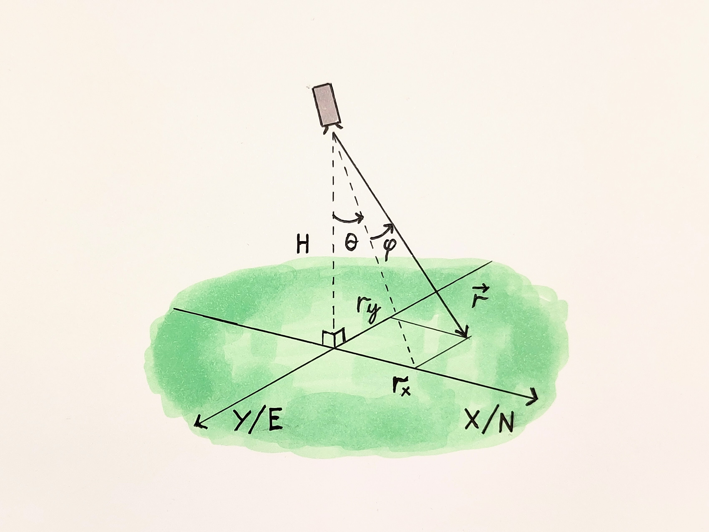
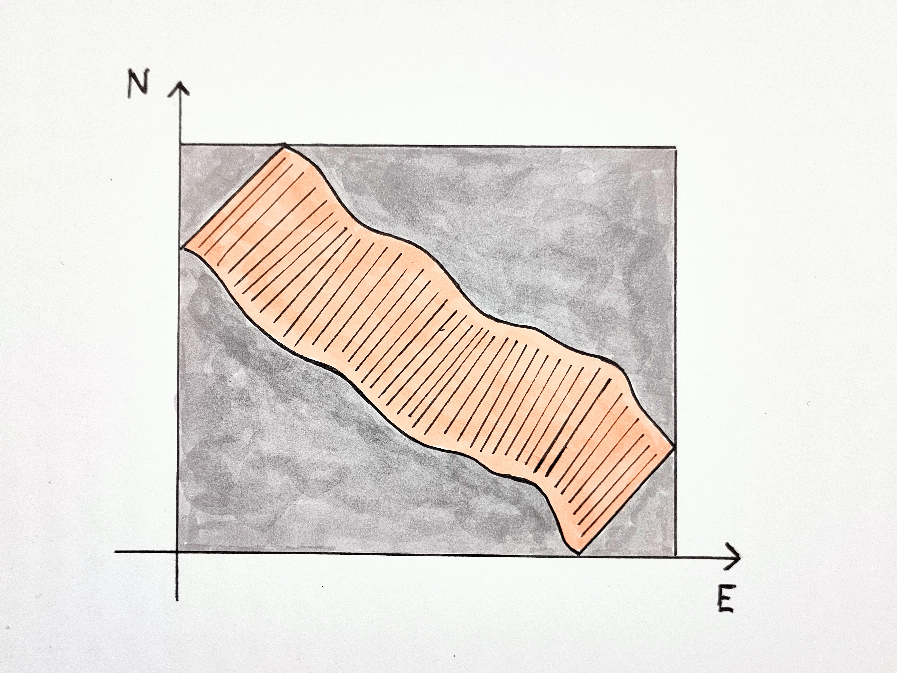

Camera model and IMU data
Coordinate system
The orthorectification methods of MassiPipe assume that the camera position and orientation is measured with an IMU, with the following data available: - Time - Position (longitude and latitude) - Camera orientation ("roll", "pitch", and "yaw")
The camera orientation is assumed to follow that of aircraft principal axes, i.e. a right-handed coordinate system where
- X axis points forward
- Y axis points right
- Z axis points down
This system is also referred to as "north-east-down" (NED). The rotation angles (Tait-Bryan angles), are defined as follows (illustrated in the airplane image below).
- Roll (\(\phi\)): Rotation around the X axis, zero at horizontal, positive for "right wing down".
- Pitch (\(\theta\)): Rotation around the Y axis, zero at horizontal, positive for "nose up".
- Yaw (\(\psi\)): Rotation around the Z axis, zero at due North, positive for nose right (clockwise seen from above).

(Image: Auawise, Wikimedia Commons)

Note that while positive pitch is almost always defined as "nose up", in some cases positive roll is defined in the opposite direction of that above, i.e. "right wing up". Note that this is not consistent with a right-handed coordinate system, but it is used nevertheless. In this case, the sign of the roll angle should be flipped:
Camera orientation
The orthorectification assumes a push-broom camera with axes defined as shown in the image below. The \(z\) axis points towards the middle of the camera line of sight, and the line of sight is parallel with the \(y\) axis. The camera is mounted on a platform with the \(x\) axis pointing along-track (forward) and the y axis pointing to the right, across-track.

Image pixel matrix
The pushbroom camera captures images line-by-line, and images are displayed with lines stacked horizontally, starting from the top. Image indexing follows the matrix indexing convention, with \((i,j)\) corresponding to row \(i\) and column \(j\). The number of rows and columns is denoted \(M\) and \(N\), respectively. Note that the spatial \(x\) axis aligns with the \(i\) "row axis", i.e. a higher row number corresponds to a position further forward. However, the spatial \(y\) axis and the \(j\) "column axis" point in opposite directions.

Looking angle
A pushbroom camera creates an image of the ground by scanning a narrow "line of view" over it. The line of view corresponds to a line of spatial pixels. If we trace a ray from the camera to each pixel as imaged on the ground, the line of view corresponds to a planar "fan". Each pixel corresponds to a looking angle \(\alpha_j\), with \(j\) denoting the integer pixel index.

Assuming a centered fan, we can calculate the looking angle for each pixel based on the camera field of view (FOV). Note that the ordering of pixel indices matches the direction of positive roll.
Combined looking angle and roll
When mounting a push-broom camera on a UAV or an airplane, the typical orientation is with the camera pointed straight down and the fan spread out symmetrically "across-track", i.e. parallel to the pitch axis. If the camera and IMU frames of reference are perfectly aligned, the effective roll for a single pixel is given by the sum of the looking angle \(\alpha_j\) and the overall camera roll \(\phi\).

Pitch angle
The effect of non-zero pitch angles is to tilt the image "fan" forward (positive pitch) or backward (negative pitch) relative to nadir.

Ray tracing
Motivation
Even though a pushbroom camera is pointed approximately downwards, movement of the camera platform (e.g. an aircraft) causes the pixel fan to "dance around" on the ground below the camera. By accurately tracking the pixel positions the original image, the raw image can be resampled / interpolated to a regularly spaced grid.
To calculate the coordinate of a pixel on flat ground, we start with a unit vector pointing towards the center of the camera field of view (along the \(z\) axis in the camera frame). We then apply a set of rotations, based on looking angle and camera orientation, to find the direction of this vector in the "world" reference frame (in so-called NED coordinates; north, east and down). By extending the rotated vector until it reaches the ground below, we can calculate the coordinates of the point on the ground. For simplicity we start by considering a single pixel, and show a more general solution later.
Rotation matrices
In general, rotation of a vector in 3D space is performed with a 3x3 matrix,
Rotation matrices can be combined to effectively perform multiple rotations in succession. The three angles measured by the IMU (roll \(\phi\), pitch \(\theta\) and yaw \(\psi\)) describe three such combined rotations, performed around the \(x\), \(y\) and \(z\) axis, respectively. The rotations are performed with the following three rotation matrices:
These matrices are combined to perform an "intrinsic" rotation of any column vector \(\mathbf{v} = [x,y,z]^T\) from the IMU frame to the world frame:
where the order of operations is read from right to left, i.e. the rotation about the \(x\)-axis is applied first, then \(y\), then \(z\). The product of the three rotation matrices is a single 3x3 matrix, \(R_{\text{world} \leftarrow \text{IMU}}\), describing the rotation from the IMU frame to the world frame.
Pixel offsets on the ground - along-track and across-track
To understand how roll and pitch correspond to across- and along-track offsets, we'll first consider the combined rotation around the x and y axes:
Let's now consider a unit vector \(\mathbf{\hat{z}} = [0,0,1]^T\) pointing straight down, i.e. towards the middle of the field of view for the camera. We can rotate this vector to create a new unit vector \(\mathbf{\hat{d}}\) :
The new unit vector is simply equal to the last column of the combined rotation matrix. If we extend this new unit vector down to the ground below the camera, i.e. to where the z coordinate corresponds to the altitude above ground, \(H\), then the \(x\) and \(y\) coordinates correspond to the along-track and across-track offsets on the ground, respectively.
where \(t\) corresponds to the length of the vector. The z coordinate lets us solve for this length, \(t = \frac{H}{\cos \phi \cos \theta}\) . Inserting this into the equation above, we obtain

The \(r_x\) and \(r_y\) values thus correspond to the along-track and across-track pixel offsets on the ground, respectively. The result matches our intuition:
- A positive pitch \(\theta\) tilts the whole fan forwards, i.e. it results in a positive along-track offset \(r_x\).
- A positive roll \(\phi\) tilts the whole fan to the left, i.e., across-track offset \(r_y\) is negative. The term \(\cos \theta\) in the denominator is always positive for a down-looking camera, and accounts for the fact that when the fan is tilted forwards or backwards (non-zero pitch), the rays of the fan spread out more before they intersect the ground plane.
Correcting camera-IMU frame offsets
A vector can be rotated from the camera frame to the "world" frame with a single rotation matrix:
Ideally the IMU and the camera frame of reference would be identical. However, in practice there are often small misalignments, such that
where \(R_{\text{world}\leftarrow\text{IMU}}\) is the rotation matrix that can be directly calculated from IMU rotation angles. In the case above, the \(R_{\text{camera}\leftarrow\text{IMU}}\) matrix represents a kind of additive "bias" to the measurement. For example, if the camera has a roll angle of 5 degrees (no other rotations), but the IMU is misaligned such that it measures 10 degrees roll, the \(R_{\text{camera}\leftarrow\text{IMU}}\) represents the +5 degrees IMU bias.
However, the relationship above can also be expressed as
In the equation above, the \(R_{\text{IMU}\leftarrow\text{camera}}\) matrix acts as a "correction term", performing the inverse of the "bias" rotation described above. Continuing the numerical example above, the \(R_{\text{IMU}\leftarrow\text{camera}}\) corresponds to a roll of -5 degrees, which combines with the IMU roll of 10 degrees, resulting in the true camera roll of 5 degrees.
Note that when rotations are non-zero for multiple axes, the type of simple "angle addition" in the example is not possible.
The bias / correction rotation matrices must be measured or estimated, e.g. by comparing image data with the IMU measurements (sometimes called "boresight calibration").
Full rotation from pixel to world frame
The camera looking angles \(\alpha_j\) described above correspond to a simple rotation around the camera \(x\) axis. This can also be interpreted as a rotation from a pixel reference frame to the camera reference frame:
We can combine this with the offset between camera and IMU and the rotation measured by the IMU to create an end-to-end rotation from a pixel to the world frame:
In the expression below, subscripts \(i\) and \(j\) correspond to the image row and column. \(R_{\text{world} \leftarrow \text{IMU},i}\) corresponds to the roll, pitch and yaw rotations for image line \(i\):
Pixel coordinates on the ground
To calculate the ground position of a pixel based on a combined rotation matrix \(R_{\text{world}\leftarrow\text{pixel}}\), we follow the same procedure as in the section on along- and across-track offsets. A downward-pointing unit vector \(\hat{\mathbf{z}}\) in the camera (pixel) frame is rotated to a direction unit vector \(\hat{\mathbf{d}}\) in the world frame.
The direction vector is extended until it reaches the ground via parameterization, \(\mathbf{d} = t \cdot \hat{\mathbf{d}}\). We can then use the \(z\) component, corresponding to altitude \(H\) above ground, to solve for \(t\)
and this gives us an expression for the vector \(\mathbf{d}\) from the camera to the ground.
The coordinates of the camera are denoted \(\mathbf{r}_\text{camera} = [N,E,0]^T\), where \(N\) and \(E\) denote northing and easting. The \(z\) coordinate of the camera is zero by definition. We combine the camera position with the ray vector \(\mathbf{d}\) to get the position of the pixel in world coordinates:
This is repeated for every pixel \((i,j)\). We can highlight this by adding subscripts to the vector equation above:
Resampling to grid
The pushbroom camera "fan" covers a part of the ground called the "swath". The shape of the swath may be irregular due to camera platform movements, and the swath is usually not aligned with northing or easting axes. To convert the image data to a regular raster grid, it is resampled.
MassiPipe orthorectification uses pyresample to perform resampling. The swath and the rectangular raster area (orange and gray in image below) are defined as SwathDefinition and AreaDefinition objects. The SwathDefinition includes the spatial coordinates corresponding to each pixel in the original image. Resampling is performed as nearest-neighbor resampling, via pykdtree.
